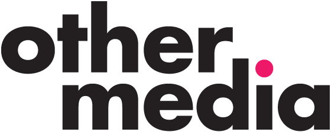

Hello. I am a front end web developer with over ten years experience of building websites used by millions of people. I care about crafting a web that looks good, loads fast & works everywhere, for everyone.
Skillset
Over the past few years I've been working mainly with these languages, tools and methodologies to various degrees. I'd be more than happy to discuss my experience with any of these on the phone, Hangout/Skype or in person.
Languages
HTML5
CSS3
SASS / LESS
jQuery
Javascript
HAML
Jeykll
Zend Framework
AngularJS
Tools
Git
SVN
Heroku
Drupal
Wordpress
Magento
Grunt
Jasmine
Perch CMS
Craft CMS
Shopify
AWS
Deploy HQ
Photoshop
Pixelmator
Methodologies
Agile / Scrum
Kanban
BDD
TDD
A/B Testing
Continous Integration
Continuous Deployment
Mobile First
Responsive Web Design
Pattern Libraries
SMACSS
BEM
AJAX
Restful APIs
Core Skills
HTML5 / Semantics
expert
expert knowledge
CSS3 / SASS / LESS
expert
expert knowledge
Javascript / jQuery
highly competent
highly competent
Responsive/Mobile
expert
expert knowledge
SEO
extensive knowledge
extensive knowledge
Load Performance
extensive knowledge
extensive knowledge
Working Experience
July 2013 - Dec 2014
Contracting Front End Developer
I joined a small team of developers four months after FutureLearn was founded to help build a beta product fit for public unveiling in mid-Sept.
Within the first 3 months, the user base quickly grew to over 250,000 registered users. In Oct 2014, after just one year live, FutureLearn is fast approaching 1.5 million enrolments.
The product is built in Ruby on Rails, using HAML and SASS on the front end. The team worked using Agile to gain real-time feedback from beta users to shape the product. I was one of two contracting Front Enders who helped build a scalable, modular, front end architecture which the maturing team can now inherit and build upon further.
Worked with other developers to create a consistent Pattern Library.
Collaborated closely with design/UX team to produce mobile first designs.
Worked with automated testing to ensure QA and confidence in site stability.
Using Continuous Integration to deploy on average 5 times a day.
Heavily involved in recruitment process for full time front end team.

June 2013 - July 2013
Senior Front End Developer
In my time with Other Media I was leading a small Front End team helping them transition to a more agile way of working (Scrum) to deliver high profile responsive projects for large enterprise clients such as Paul Smith and smaller high impact projects for highly visible clients such as Jasper Conran.
Responsible for Front End build of Paul Smith redesign on Drupal with Magento eCommerce integration.
Involved in brainstorming and pitching for new work.
Organised internal 'Learning Lunches' to encourage knowledge share within the agency.
July 2007 - June 2012
Client Side Developer / Web Developer
I worked at the BBC for just under 5 years in total, progressing from a Junior Client Side Developer in 2007 at BBC Switch to spending my last eighteen months on the BBC iPlayer team.
In this role, I worked within a large project team to deliver continuous improvements and features to the BBC's high profile TV & iPlayer website.
I worked in an Agile team of ~10 developers, and was required to produce high performing, well written, object oriented code on a daily basis.
Working closely with my Project Manager, designers, other developers and testers within two week release cycles, I help shape new features and improvements that enhanced the user experience for the millions of visitors that hit BBC iPlayer each week.
We were one of the first teams within the BBC to embrace responsive, launching the Channels websites just before I left in June 2012, which went on to be the foundation for the revamped iPlayer site as it is today.
In my five years, I also spent eighteen months on attachment to BBC Northern Ireland in Belfast where I had responsibility of supporting a large portfolio of legacy sites within a small technical team.
Involved in producing live events sites for BBC Radio 1
Worked on high visibility products such as Human Planet, Battle of Britain and the Royal Wedding.
Education
Belfast, Northern Ireland 2003 - 2007
Awarded 2:1 in BSc (Hons) Interactive Multimedia Design
Notable: Awarded place in SPEED Young Entrepreneurs Programme in Final Year.
Professional Development
I like to keep a close key on industry trends and best practice by attending regular meet-ups like London Web & Web Standards.
I enjoy attending conferences when I can. This year I've been to jQueryUK & EpicFEL.